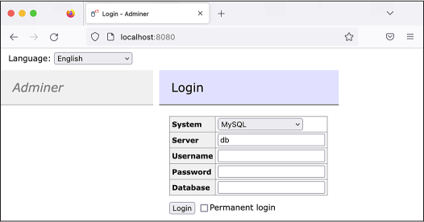
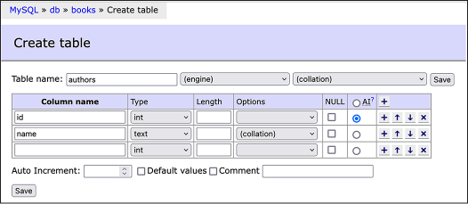
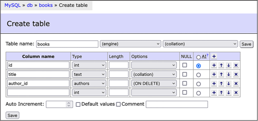
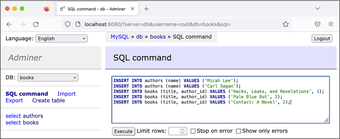
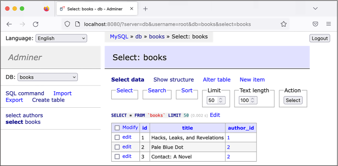
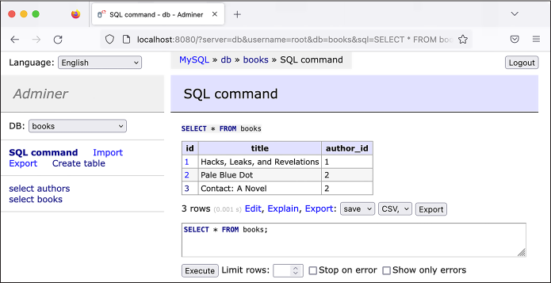
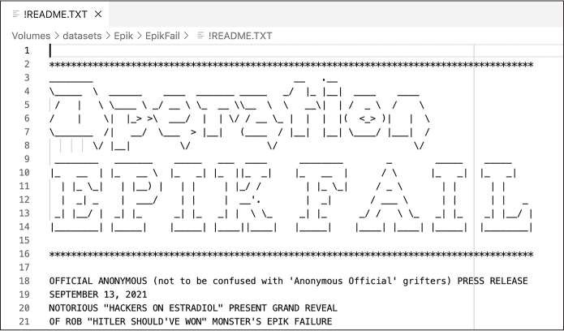

Armed with an AR-15 assault rifle and three Glock semi-automatic pistols, Bowers entered the Tree of Life Synagogue, where three different Jewish congregations were holding Shabbat services that morning, and committed the deadliest antisemitic terrorist attack in US history. He killed 11 people and wounded 6 others, including several Holocaust survivors.
That day, several companies kicked Gab off their platforms. GoDaddy, the registrar that Gab used to buy the domain gab.com, sent Gab a letter saying it had “discovered numerous instances of content on your site that both promotes and encourages violence against people.” Gab was down only for a few days, though, thanks in part to the domain name registrar and web hosting company Epik, which soon took over registration for gab.com.
In this chapter, you’ll learn about Epik, its extremist customers, and the 2021 data breach that exposed hundreds of gigabytes of customer data. You’ll download and learn to work with some of the leaked data, most of which is in the format of structured query language, or SQL (often pronounced “sequel”). SQL is a popular database technology that many websites, online services, and local software use to store data. This chapter focuses on MySQL databases, which use the SQL software that Epik uses. You’ll also practice using database software called MariaDB, a community-maintained version of MySQL. Finally, you’ll learn to run a SQL server (software that allows you to host SQL databases), import the data, and write your own code to search it, skills that will prepare you for investigating your own SQL datasets in the future.
The Structure of SQL Databases
I have briefly discussed SQL databases in previous chapters, including Chapter 10, where you converted CSVs into SQLite databases for BlueLeaks Explorer. There are many types of SQL databases, including PostgreSQL, Microsoft SQL Server, Oracle SQL, and the aforementioned MySQL and SQLite. While they’re all based on SQL, they have minor differences that mean they’re not entirely compatible with each other. SQL databases are popular; therefore, so are SQL data breaches.
Some SQL database software is proprietary. For example, Microsoft SQL Server is the version of SQL that Microsoft products require, and it runs only on Windows. Oracle is another proprietary version of SQL; if you get a leaked Oracle database, you’ll need to use Oracle software to access it. PostgreSQL and MySQL are free and open source and run on Linux servers, making them popular and widely used in web development. SQLite is another free and open source version of SQL. It can’t handle huge databases, but it’s very simple and convenient for small ones—iPhone and Android apps frequently store their settings in a SQLite database, for example.
NOTE Some datasets may require you to set up a SQL database server that you’re unfamiliar with, or figure out how to convert them into a type of SQL you already know, in order to analyze them. I once contributed to an investigation based on a leaked Chinese police database that revealed the suffocating surveillance of China’s Uyghur minority group in the Xinjiang region. It was an Oracle database, but it’s unclear whether the Chinese police paid for it or were pirating it. Because Oracle is proprietary and the investigating technologists didn’t have an Oracle license or experience with this version of SQL, they decided to convert it into a PostgreSQL database so they could more easily work with the data. Read the full report by Yael Grauer at https://theintercept.com/2021/01/29/china-uyghur-muslim-surveillance-police/.
Next we’ll look at what relational databases are, how SQL servers typically work, and the terminology used to describe SQL databases and the data they contain.
Relational Databases
SQL databases are made up of tables, which you can think of as spreadsheets comprising a list of rows, with each row containing the same columns, or fields. SQL databases are useful because they’re relational, meaning that data in different tables can relate to each other. You saw this firsthand when working with BlueLeaks Explorer: the BlueLeaks folders had individual spreadsheets like Documents.csv and DocumentCategory.csv, but once you converted them into SQLite databases, you could rely on the relationship between the Documents and the DocumentCategory tables to browse BlueLeaks documents by category.
Let’s look at a simple example: a database that contains two related
tables for books and authors. Table 12-1
shows the information stored in the authors table.
Table 12-1: The authors Table
id |
name |
|---|---|
| 1 | Micah Lee |
| 2 | Carl Sagan |
Table 12-2 shows the information stored in the books table.
Table 12-2: The books Table
id |
title |
author_id |
|---|---|---|
| 1 | Hacks, Leaks, and Revelations | 1 |
| 2 | Pale Blue Dot | 2 |
| 3 | Contact: A Novel | 2 |
Each SQL database can contain multiple tables, and each table has a
defined set of fields. For example, Table 12-2 has id, title, and author_id fields.
Every table in a SQL database normally has a unique id field that auto-increments, meaning
that when you add rows of data to the table, the first row is
automatically given an id of
1, the second is given an id
of 2, and so on, ensuring that no two rows ever have the same
id. If Table 12-1 included two authors named Micah Lee, it
would be clear in the database that they’re not the same person, because
the ID for each row would be different.
In general, tables relate to each other using
these unique ID numbers. Let’s say you’re browsing through the
books table and come across
Contact: A Novel. Who wrote it? According to the data in its row, the
author_id is 2. To find out who the author is, you’d
look at the authors table
for the row with the id of
2 to find that it’s Carl
Sagan.
This example deals with a small amount of data, but SQL databases can
become huge and complicated. For example, instead of two authors, you
might find a database with 10 million users and all sorts of tables that
relate to it using a field called user_id.
Clients and Servers
Most types of SQL databases are server software, meaning you install a
SQL server to hold all of the data. Other computers then use a SQL
client to communicate with that server to search for, add, or update
data. This communication is similar to how websites work: a web server
has the software that runs the website, while a web browser (the client)
connects to the server remotely to load web pages, submit forms, and so
on. SQL clients communicate to servers using SQL queries, also known as
statements. Similarly to English, SQL queries start with a verb that
describes an action being taken and have clauses that further describe
that action. All SQL queries end with semicolons (;).
Each SQL server can host multiple databases. For example, you could run 20 different WordPress websites on the same MySQL server by having each website use a different database. The Epik dataset includes data from nine different MySQL databases. If you downloaded them all, you could import all nine into the same MySQL server. Because much of the Epik data is in MySQL format, in Exercise 12-1 you’ll run a MySQL server in Docker. Once you have a server running, you’ll connect to it later using a client to import the data and begin your analysis.
In this chapter, you’ll try out two different MySQL clients: the
web-based client Adminer and the mysql command line client, which allows you
to interact with the database from the terminal. For MySQL, Adminer is
more user-friendly for manually browsing a SQL database, but
mysql is especially useful
for working on remote servers and creating or restoring database
backups. For a simpler introduction to working with clients, you’ll use
Adminer in the first half of this chapter, then move on to the command
line client. All clients interact with servers in the same way, sending
SQL queries to the SQL server, which runs them and returns a response.
Therefore, the skills you learn using Adminer will also apply to the CLI
client.
SQL servers also normally have a system of users and permissions that allow you to grant a given user access to some databases but not others. The root user on MySQL and other databases has total access to every database on the server. When you’re researching a leaked database, it’s fine to run all of your searches as the root user since you’re typically the only person using that server. However, if you’re running a database that strangers online might use, such as a website powered by a SQL database, you should use non-root database users with restricted permissions. This way, if one of those strangers hacks your database, they’ll have access only to what that specific database user has permissions for.
Tables, Columns, and Types
You can store only a single type of data in each column in a SQL table.
For example, you can store strings, but not numerals, in the
title column of Table 12-2 (though you could get around this by
storing a string representation of a number, like the string
'1' instead of the number
1).
Data types differ slightly depending on the flavor of SQL you’re using. However, you’ll generally see types representing numbers, times, or strings of text. The following list includes some common SQL types that are all valid in MySQL:
INTIntegers or whole numbers
DECIMALNumbers with decimal places
DATEA specific date
DATETIMEA specific date, along with the time of day
VARCHARA string of characters of a specified length
TEXTAlso a string of text
If Table 12-2 were stored in a MySQL
database, id would be type
INT, title would be type TEXT, and author_id would be type INT. If you tried storing the string
"hola" in the
author_id field, the SQL
server would respond with an error message, because the data isn’t an
integer.
THE HISTORY OF MARIADB
MySQL was first released in 1995 as open source SQL database software maintained by the Swedish company MySQL AB. For nearly two decades it reigned as the most popular database for web apps, ushering in the early internet’s Web 2.0 era. Wildly popular web app software like WordPress, Drupal, Joomla, and MediaWiki (which powers Wikipedia) were all built on MySQL databases and developed in the PHP programming language.`
In 2008, Sun Microsystems acquired MySQL AB, and with it the MySQL software. In 2009, Oracle announced that it was acquiring Sun Microsystems. The MySQL community had many concerns about the future of the project in Oracle’s hands, including that it would cease to be open source. In response, the database’s original creator, Michael “Monty” Widenius, forked MySQL into a new version, MariaDB, that would remain open forever. (Forking an open source project means starting a whole new open source project that’s based on the code of an existing project.) Many of the original MySQL developers stopped working on MySQL and moved to the MariaDB project.
MariaDB is completely compatible with MySQL, and you can seamlessly switch between the two database servers and clients. The command line client that comes with MySQL will connect to a MariaDB server, and the command line client that comes with MariaDB will connect to a MySQL server. I’ve found that it’s easier to get MariaDB up and running than the original MySQL software, so you’ll use a MariaDB server for the exercises in this chapter. However, since MariaDB is completely compatible with MySQL, it’s common to use the terms interchangeably. I’ll refer to both as MySQL for the remainder of the chapter, except when referring to specific MariaDB software packages.
When Widenius originally created MySQL, he named it after his daughter, My. When he forked MySQL into MariaDB in 2009, he named the new project after his youngest daughter, Maria.
The simplest way to run a MariaDB server on your computer is by using Docker containers, like you did in Exercise 5-3 when you set up a local WordPress website as practice using Docker Compose. In the following exercises, you’ll get a MySQL server up and running, connect to your new server using MySQL clients, and practice using SQL.
Exercise 12-1: Create and Test a MySQL Server Using Docker and Adminer
With Docker, you can quickly run different types of SQL servers on your computer, no matter what operating system you’re running. In this exercise, you’ll run a MariaDB server on your computer using Docker Compose. Once you have the server up and running, you’ll use the Adminer MySQL client to add the contents of Tables 12-1 and 12-2 to it as a test. You’ll move on to working with real leaked data later in the chapter, but you’ll start by experimenting with some simple example databases.
Run the Server
Create a folder for this chapter’s exercises and a docker-compose.yaml file in that folder. Type the following code into the file (or copy and paste it from https://github.com/micahflee/hacks-leaks-and-revelations/blob/main/chapter-12/docker-compose.yaml):
version: '3.9'
services:
db:
image: mariadb:10.9
environment:
MARIADB_ROOT_PASSWORD: this-is-your-root-password
MARIADB_ROOT_HOST: "%"
ports:
- 3306:3306
volumes:
- ./db_data:/var/lib/mysql
adminer:
image: adminer
ports:
- 8080:8080
The docker-compose.yaml file in Exercise 5-3 used a db service running MariaDB, and a
wordpress service running
the WordPress container. In that case, wordpress connected to db to run queries in order to save and
load website content. This code uses an adminer service to likewise connect to the
db service.
The code provides the version number of the Compose specification with
which the file is written (3.9). It then defines the two services and
includes the version of the mariadb container image that the db service runs. It sets the database
root user’s password to this-is-your-root-password (change this to a different password
if you like). As noted earlier, you’ll work as the database’s root user
throughout this chapter, since you’re the only one accessing this
database. It publishes port 3306, meaning that you can connect to the
server with a MySQL client on localhost at port 3306, and configures a
volume to store all of MariaDB’s database files in a db_data folder.
You’ll import several gigabytes of data into this database.
The adminer service runs the
latest version of the adminer container image. Adminer publishes
port 8080, so you can load Adminer in a web browser at
http://localhost:8080.
Open a terminal, change to the folder for this chapter’s exercises, and start the containers with the following command:
docker-compose up
The first time you start the containers, your computer downloads the container images from Docker Hub, if you don’t already have them. After the containers start, you should see that a db_data folder containing all of the data stored in the database so far has been added to your exercises folder.
Connect to the Database with Adminer
You just started two containers, one for your MySQL server and the other for your MySQL client, Adminer. Now you’ll connect to Adminer and use it to log in to your MySQL server. To access Adminer, open a browser and load http://localhost:8080. You should see the Adminer login page shown in Figure 12-1. Here you can choose the type of database to which you’re connecting and what credentials you’ll use to log in. Keep System as MySQL, keep Server as db, set Username to root, and set Password to this-is-your-root-password (or whatever you used in your docker-compose.yaml file). Leave the Database field blank, since you haven’t imported any databases yet.
Once you’ve logged in, you should see a list of default databases:
information_schema,
mysql,
performance_schema, and
sys. MariaDB uses these to
store information it needs to run the database server, so in general,
you shouldn’t touch them. Instead, you’ll create new databases and work
with them.

Figure 12-1: The Adminer login page
Create a Test Database
To test out your new MySQL server, you’ll create a brand-new database and enter Tables 12-1 and 12-2. Click the Create Database link, enter books in the field that pops up, and click Save. Once you’ve created the books database, click the Create Table link. Under Table Name, enter authors.
To add a column in Adminer, you enter its name under the Column Name header and choose a data type. To enter the first column from Table 12-1, create an id column and choose type int (short for “integer,” as mentioned earlier). Select the AI radio button, which sets this column to auto-increment. When you’ve finished, create the second column, name, with type text.
Figure 12-2 shows what the form should look like when you’ve finished.

Figure 12-2: Creating the authors
Click Save to finish creating the table in the database. Adminer should bring you to the structure page for your new table, showing you the two columns you just created. Your table should start out empty, without any rows.
At the top of the window, you should see page navigation links (for example, MySQL ▸ db ▸ books in Figure 12-2). Click books to return to the books database page, then click Create Table again to create Table 12-2, giving it the name books. Add the following columns:
- An id column with type int and AI checked
- A title column with type text
- An author_id column
NOTE Adminer is smart enough to determine on its own that the author_id
column uses the int
type and relates to the authors.id column, so it will automatically set
the type to authors.
Figure 12-3 shows what this form should look like once you’ve added these columns.

Figure 12-3: Creating the books table in Adminer
Click Save. You’ve now created a books database with two tables,
authors and books, but there isn’t any data in it yet.
Now that you have a MySQL database running on your computer and access to the Adminer MySQL client, you’re ready to run your own SQL queries. Your first queries will add the data from Tables 12-1 and 12-2 into their corresponding MySQL tables.
Exercise 12-2: Query Your SQL Database
In this exercise, you’ll learn the syntax of SQL queries. You’ll be using MySQL, but the syntax is nearly identical to that of all other types of SQL, so this section should give you a solid foundation for writing SQL queries in general. You’ll learn the different verbs and practice running SQL queries to add, update, delete, and most importantly, search the data in SQL databases.
Make sure that your Docker containers from Exercise 12-1 are up, then load Adminer in your web browser at http://localhost:8080. Also make sure you’ve logged in to your MySQL server as the root user, using the same password from the previous exercise. When you’re ready, click the books database to begin.
INSERT Statements
So far the books database
you created in Exercise 12-1 includes the tables authors and books, but those tables don’t have any rows.
To add new rows to your tables, you use the INSERT verb as follows:
INSERT INTO table_name (column1, column2, ...) VALUES (value1, value2, ...);
In Adminer, click the SQL Command link in the left sidebar. In the
empty field that pops up, enter the following INSERT queries:
INSERT INTO authors (name) VALUES ('Micah Lee');
INSERT INTO authors (name) VALUES ('Carl Sagan');
INSERT INTO books (title, author_id) VALUES ('Hacks, Leaks, and Revelations', 1);
INSERT INTO books (title, author_id) VALUES ('Pale Blue Dot', 2);
INSERT INTO books (title, author_id) VALUES ('Contact: A Novel', 2);
These commands insert all of the rows into the two tables in the
database, one row at a time. The first two lines insert rows into the
authors table, just setting
the name field, while the
last three lines insert rows into the books table, setting the title and author_id fields. These INSERT statements don’t specify id values because the id field for both tables auto-increments,
starting with 1.
While you don’t need to set the id field when inserting into the
books table, you do need to
set the author_id field
manually, which is how you tell the database who the author of each book
is. Since the authors table
started out empty, the author row for Micah Lee should have an id of 1 (as it was the first row added to the
table), and the row for Carl Sagan should have an id of 2. When the code inserts the
Hacks, Leaks, and Revelations title, it sets
author"SANS_TheSansMonoCd_W5Regular_11">1, and when it inserts the two books by
Carl Sagan, it sets author_id to 2.
NOTE In this chapter I write SQL keywords like INSERT and WHERE in all caps, but doing so is
just a popular convention. SQL keywords aren’t case sensitive, so you
can use insert,
where,
select, and so on
if you prefer.
Figure 12-4 shows the process of inserting
data into the authors and
books tables by running
these five INSERT queries.

Figure 12-4: Running INSERT queries in Adminer
Once you’ve entered this series of SQL queries
into Adminer, click Execute to run them, which should insert all of
these rows into your database. Click select in the left sidebar to
view the new data in the database. Figure
12-5 shows all of the rows in the
books tables in Adminer.

Figure 12-5: Viewing rows in the books table in Adminer
Right above the table of data in Figure
12-5, you can see the line
SELECT * from 'books' LIMIT 50 (0.0002 s), which is the SQL statement Adminer
executed to retrieve this data from the MySQL database, followed by the
amount of time it took for the query to run.
SELECT Statements
While INSERT statements add
information to SQL databases, SELECT statements ask a database for specific
information. When investigating leaked SQL databases, you’ll likely
spend most of your time writing SELECT statements.
You can use a SELECT
statement to select all of the books by a certain author or, in the case
of Epik data, all of the domain names registered by a specific person.
Here’s the general syntax:
SELECT column1, column2, ... FROM table_name WHERE condition ORDER BY column1, column2, ...;
When your SQL client runs a SELECT statement, the SQL server returns a
table of data. To select everything in the books table, click the SQL Command link
in Adminer’s left sidebar and run the following query:
SELECT * FROM books;
This command uses an asterisk (*) as a wildcard character, which means
you’d like the response to include all columns. It also leaves out the
WHERE clause, so it will include all of the
rows in the books table
without filtering them. Figure 12-6 shows
these results in Adminer.

Figure 12-6: Running a SELECT query in Adminer
After running a SELECT
query, click Adminer’s Export link to export the data returned as a
CSV spreadsheet. The options in the first drop-down menu are open,
which allows you to open a CSV directly in your browser; save, used to
download the CSV; and gzip, which lets you download a compressed
version of the CSV. The three options in the second drop-down menu allow
you to save the file with data separated by commas, semicolons, or tab
characters.
You can open spreadsheets created this way in software like Microsoft Excel or LibreOffice Calc and work with the data using that software. This makes it easier to share the data with colleagues or use advanced features like visualizing the data.
Selecting Individual Fields
You previously ran the SELECT * FROM table_name query to select all the
columns in a table, but you can also choose only specific columns. Say
you want to return only a list of titles in the table. Select the
title field alone with this
query:
SELECT title FROM books;
Instead of including all columns, this table includes only the book titles. The SQL server should return the results shown in Table 12-3. (For the remainder of this section, for simplicity’s sake, I’ll represent the information returned from SQL queries as tables in text rather than Adminer screenshots.)
Table 12-3: The title Column in the books Table
title |
|---|
| Hacks, Leaks, and Revelations |
| Pale Blue Dot |
| Contact: A Novel |
When you’re working with larger databases, select only the columns you need so your queries will finish faster.
Sorting Results
Use the ORDER BY clause to
sort the results of your queries. For example, to select all of the
columns in the books table,
with the results sorted by the book title, run this query:
SELECT * FROM books ORDER BY title;
The results of this query will be ordered alphabetically by the title column, as shown in Table 12-4.
Table 12-4: All Columns in the books Table, Ordered by the title Column
id |
title |
author_id |
|---|---|---|
| 3 | Contact: A Novel | 2 |
| 1 | Hacks, Leaks, and Revelations | 1 |
| 2 | Pale Blue Dot | 2 |
By default, results are sorted in ascending order: text fields are
ordered alphabetically; number fields are ordered from smallest to
largest; and date fields are ordered from earliest to latest. You can
sort the results in descending order by using the DESC keyword. For example, use the
following query to select all of the books, ordered by title column in reverse alphabetical order:
SELECT * from books ORDER BY title DESC;
You can also sort results by more than one column. For example, to first
order the books by author_id
(so the results will include all books by author 1 first, then by author
2, and so on), and then by title (so that within each author’s list of
books, the books are sorted by title), run this query:
SELECT * from books ORDER BY author_id, title;
This should order the results first by author_id, then by title, as shown in Table
12-5.
Table 12-5: All Columns in the books Table, Ordered by author_id and title
id |
title |
author_id |
|---|---|---|
| 1 | Hacks, Leaks, and Revelations | 1 |
| 3 | Contact: A Novel | 2 |
| 2 | Pale Blue Dot | 2 |
In this case, all of the books by the author with author_id of 1 (Micah Lee) are shown first, and the
books by the author with author_id of 2 (Carl Sagan) are shown next. The books
for each author are then sorted alphabetically by title.
Counting Rows in a Table
SQL databases have built-in functions you can run as part of your
queries. For example, to find out how many rows are in the
books table, use the
COUNT() function:
SELECT COUNT(*) FROM books;
After you run this command, the SQL server should return the results shown in Table 12-6.
Table 12-6: Counting the Number of Rows in the books Table
COUNT(*) |
|---|
| 3 |
Selecting COUNT(*) from a
table is considerably faster than selecting all of the rows in that
table and then counting them.
Filtering SELECT Results with WHERE Clauses
You can also filter the results you get back using the WHERE clause. For instance, to find the
titles of books written by Micah Lee, run the following query:
SELECT title FROM books WHERE author_id=1;
The SQL server should return the results shown in Table 12-7.
Table 12-7: The title of books Where author is Micah Lee
title |
|---|
| Hacks, Leaks, and Revelations |
Similarly to Python if
statements, the WHERE clause
also supports parentheses and Boolean logic operators AND and OR, as well as the comparison
operators greater than (>), greater than or equal to
(>=), less than (<), and less than or equal to
(<=). For example, say you
want to search for books with an id between 10 and 100, including the
number 10 but not the number 100. Try that out with the following query:
SELECT * FROM books WHERE id >= 10 AND id < 100;
You can use the equals (=)
operator to search for exact strings. For example, run the following
command to find all of the authors with the name Carl Sagan:
SELECT * FROM authors WHERE name='Carl Sagan';
This search is case sensitive, so while it would find authors named Carl
Sagan, it wouldn’t find authors named CARL SAGAN or carl sagan. For a
case-insensitive search, use the LIKE operator. Try running the following
command:
SELECT * FROM authors WHERE name LIKE 'carl sagan';
This command finds authors named Carl Sagan, CARL SAGAN, carl sagan, or any other capitalization.
The LIKE operator supports
the wildcard character, the percent sign (%), which will match any characters.
Querying the authors table
where name LIKE '%lee%' will
search for rows where name
contains any number of characters (%), followed by lee, followed by any number of characters
again (%). For example, to
find all of the authors with Lee in their names, run:
SELECT * FROM authors WHERE name LIKE '%lee%';
This query returns the row with the name Micah Lee, but it would also return Stan Lee,
Lee Young-ae, and Andrea Leeds.
To search just for people with the last name Lee, run this query:
SELECT * FROM authors WHERE name LIKE '% lee';
In this case, there’s only one wildcard character at the beginning of
the string, followed by a space, followed by lee. This query will return Stan Lee,
since this name matches any number of characters, followed by a space,
followed by lee. However, it
won’t return Lee Young-ae; this name matches any number of characters
but has no space followed by lee, and it contains extra characters
after lee.
Using logical operators, you can combine as many conditions as you want. For example, to look for books written by Carl Sagan that have the word blue in their titles, run this query:
SELECT * FROM books WHERE author_id=2 AND title LIKE '%blue%';
You could expand on that query by running the following query to also check for books with green or red in their titles:
SELECT *
FROM books
WHERE
author_id=2 AND
(
title LIKE '%red%' OR
title LIKE '%green%' OR
title LIKE '%blue%'
);
This query uses both the logical operators AND and OR, as well as parentheses. When you run
it, the SQL server will reject any rows where author_id isn’t 2 and where title doesn’t contain at least one of the
strings red, green, or blue.
This final query has multiple lines, with some of them indented. As your queries get longer, using whitespace like this can make your SQL queries easier to read. In general, I tend to write short queries on a single line and split longer queries into multiple lines. You’ll continue indenting your queries in the following sections.
You should now have a basic understanding of how to select data from a table in a SQL database. In the next section, you’ll learn to select data from multiple tables at once.
JOIN Clauses
Because SQL databases are relational, you can select data from and
receive results from columns from multiple tables simultaneously using
JOIN clauses. You can think
of these clauses as the SQL server combining (joining) multiple tables
into a single table, then selecting rows from that combined table.
For example, say you want to write a single query that will return a
table of book titles and their authors, relying on the title field in the books table and the name field in the authors table. Run the query in Listing 12-1 to select a table of results from
columns in those two tables at once.
SELECT
books.title,
authors.name
FROM books
JOIN authors ON books.author_id = authors.id;
Listing 12-1: Selecting from both the books and the authors tables using the JOIN clause
Since this query involves more than one table, you must specify the
names of the columns you want to select in the format
table_name.column_name. The SQL query selects the
book title with books.title
and the author name with authors.name. The FROM clause shows that this query is
selecting from the books table and joining this table with the
authors table. The
JOIN clause explains how the
two tables are related: the SQL server knows that a books row is related to an authors row if the value of
books.author_id matches the
value of authors.id.
When you run this query, the SQL database uses the
books.author_id=authors.id relationship specified in the
JOIN clause to build the
combined table shown in Table 12-8, from
which it can then select rows.
Table 12-8: The books and authors Tables, Combined on books.author_id = authors.id
books.id |
books.author_id |
books.title |
authors.id |
authors.name |
|---|---|---|---|---|
| 1 | 1 | Hacks, Leaks, and Revelations | 1 | Micah Lee |
| 2 | 2 | Pale Blue Dot | 2 | Carl Sagan |
| 3 | 2 | Contact: A Novel | 2 | Carl Sagan |
Each row in this combined table includes all of the columns from both
the books and the
authors tables. First,
notice that the value in each row for books.author_id is the same as the
authors.id value. This is
because of the books.author_id=authors.id relationship specified in the
JOIN clause. In each row,
the books fields contain full rows from the books table, and the authors fields contain
full rows from the authors
table. Since Carl Sagan has two books in this database, his books take
up two rows in the combined table.
The SELECT query in Listing 12-1 selects the columns
books.title and
authors.name from this
combined table. This final result of the query should contain the
information in Table 12-9.
Table 12-9: Results from the Query in Listing 12-1
title |
name |
|---|---|
| Hacks, Leaks, and Revelations | Micah Lee |
| Pale Blue Dot | Carl Sagan |
| Contact: A Novel | Carl Sagan |
The SQL server responds with a single table of rows that contains fields
from both tables, based on the books.author_id=authors.id relationship specified in the
JOIN clause.
The type of join described in this section is technically called an
INNER JOIN, which is the
default type of join in MySQL. In addition to INNER joins, however, you can also use
LEFT and RIGHT joins.
Using LEFT and RIGHT Joins
There are two additional ways to join tables together in SQL:
LEFT JOIN and
RIGHT JOIN queries. Each
time you join two tables, the table from which you’re selecting is the
“left” table (books, in the
previous example). The table with which you’re joining is the “right”
table (authors, in this
case). LEFT JOIN means that
the combined table should contain all of the rows from the left
table, but not necessarily all of the rows from
the right table. As you might guess, RIGHT JOIN means that the combined table should
contain all the rows in the right table, but not necessarily those from
the left. Finally, as you saw in the previous section,
INNER JOIN means that the
results should contain only rows where the relationship holds. That is,
if there are any rows in the left table that don’t match any rows in the
right table—and vice versa—based on the join relationship, then
those rows won’t be included in the results.
To demonstrate how this works, use the following query to add a row to
the authors table, replacing
Your Name with your
own name:
INSERT INTO authors (name) VALUES ('Your Name');
Now run the query in Listing 12-2.
SELECT
books.title,
authors.name
FROM authors
LEFT JOIN books ON books.author_id = authors.id;
Listing 12-2: Selecting from the authors table and doing a LEFT JOIN to the books table
This query is similar to the one in Listing 12-1, but this time it selects from the
authors table (making it the
left table) and joins it with the books table (making that the right table),
using a LEFT JOIN instead of
an INNER JOIN. The results
of that query contain the information in Table 12-10.
Table 12-10: Results from a LEFT JOIN Query, with the Left Table Containing More Rows
title |
name |
|---|---|
| Hacks, Leaks, and Revelations | Micah Lee |
| Pale Blue Dot | Carl Sagan |
| Contact: A Novel | Carl Sagan |
| NULL | Your Name |
Table 12-10 has an extra row that the
output of Listing 12-1 didn’t have. In this
row, the book title column
is NULL, a SQL term meaning
“empty,” and the author name
column is your own name. Because this is a LEFT JOIN, the results include all rows from the
left table (authors), even
though there aren’t any rows from the right table (books) associated with it in the
relationship.
If you ran the same query as Listing 12-2
but instead used an INNER JOIN (or just a JOIN, since inner joins are the default
join type), the results wouldn’t include that last row. Your
LEFT JOIN results included
all rows from the left table (authors), including the extra author you added
(your own name). But when you do an INNER JOIN, the results include only rows from
the left and right tables where a relationship holds. Since there aren’t
any books with the books.author_id set to your own author.id, the relationship doesn’t hold, so the
results don’t include that row.
Which type of JOIN you need
to use depends on the type of analysis you’re trying to do.
INNER JOIN is a reasonable
default, but if the SQL results you’re getting are missing data that you
want, then you’ll probably want to use a LEFT JOIN instead.
Using WHERE Clauses with Joins
As with other SELECT
statements, you can use the WHERE clause along with JOIN clauses to filter your results. To
find all titles written by Carl Sagan without knowing what his
id is in the
authors table, run this
query:
SELECT books.title
FROM books
LEFT JOIN authors ON books.author_id = authors.id
WHERE authors.name = 'Carl Sagan';
This query selects the column books.title from the books table and joins it with the
authors table using the
books.author_id=authors.id relationship. It then filters those
results to only show the rows where authors.name is Carl Sagan. This query should
return the results shown in Table 12-11.
Table 12-11: Selecting from the books Table Based on a Column in the Related authors Table
title |
|---|
| Pale Blue Dot |
| Contact: A Novel |
As with the other SELECT
statement, you can also sort your results. If you wanted to sort these
by title, you’d add ORDER BY books.title to the query.
You’ve now learned the trickiest parts of searching SQL databases for
information. Next, we’ll discuss two more simple SQL verbs:
UPDATE and DELETE.
UPDATE Statements
You can update rows in a table using the UPDATE verb, which uses this syntax:
UPDATE table_name SET column1=value1, column2=value2, ... WHERE condition;
For example, try updating this book’s title to include its subtitle by running the follow query:
UPDATE books
SET title='Hacks, Leaks, and Revelations: The Art of Analyzing Hacked and Leaked Data'
WHERE id=1;
This should have updated the title of the book with the id of 1 from
Hacks, Leaks, and Revelations to
Hacks, Leaks, and Revelations: The Art of Analyzing Hacked and Leaked Data.
DELETE Statements
To delete rows in a table, use the DELETE verb, which takes the following
syntax:
DELETE FROM table_name WHERE condition;
For example, you could delete the
Hacks, Leaks, and Revelations book from the database by running this
query (but don’t do this now, as you’ll want to keep this row for
exercises later in the chapter):
DELETE FROM books WHERE id=1;
In this case, the condition is id``=1, so this query finds any rows with an
id of 1 and deletes them.
Alternatively, if you wanted to delete all of the books with me as the
author, the condition could be author_id=1. Or if you wanted to delete all of the
books with blue in their titles, the condition could be
title LIKE '%blue%'.
Introducing the MySQL Command Line Client
So far, you’ve run all of your SQL queries through Adminer for a simpler
user experience as you learned the basics of SQL. MySQL clients like
Adminer work well for everyday tasks like browsing data in databases,
running individual queries, and quickly creating new tables. However,
for some tasks, you’ll need to use the mysql command line client.
For example, later in this chapter, you’ll use the mysql client to import data from a SQL
backup file from the Epik dataset into your MySQL server. SQL backup
files are simply text files, generally with filenames that end in
.sql, full of SQL queries—sometimes several gigabytes of SQL
queries. To import the backup, the client runs each query in the file,
one after the other. Adminer’s import feature allows you to upload a
.sql file, but the Adminer Docker service has an upload limit of 128MB
by default. The SQL backup from the Epik dataset you’ll work with later
in this chapter is 1.2GB compressed, so it would be impossible to import
it using Adminer. (Once you import it, however, you can use either
client to run queries on the data.)
The MySQL command line client is also useful for working on remote
servers, which I’ll discuss later in the chapter. After you SSH into a
server on the cloud, you can use the mysql command to connect to the MySQL
service and then run SQL queries there.
The command line client isn’t ideal for all tasks. For example, if your query results include many columns, each line of output might be wider than your terminal window, causing the output to wrap, which makes it very difficult to read. Moreover, the command line client displays all the output in your terminal. If you’re running many queries, it might be cumbersome to scroll back through your terminal history to find specific results that you ran previously. For everyday queries, it’s easier to use a graphical client like Adminer.
PYTHON AND MYSQL
You can also consider writing Python code that interacts with MySQL databases, where your Python script acts as the SQL client. For example, you wrote Python scripts in Chapter 9 that loop through every row in a CSV and then run a block of code; you might want to similarly loop through every row returned in response to a
SELECTquery. To write Python code that connects to a MySQL database and runs queries, you can use a module calledPyMySQL. For Python code that runs SQL queries, the table of data often isn’t displayed—instead, it’s stored in a variable, typically a list of dictionaries that you can loop through. For more information, see the documentation for thePyMySQLmodule at https://pymysql.readthedocs.io.
So far, you’ve seen SQL query results displayed in Adminer as HTML
tables. If you run the same queries using the mysql client, the data will be displayed as
text in your terminal. You’ll test this in Exercise 12-3.
Exercise 12-3: Install and Test the Command Line MySQL Client
In this exercise, you’ll install and practice using the MariaDB command
line client mysql, which has
the same name and works in the same way as the official MySQL client.
Start by opening a terminal. If you’re using a Mac, install it in Homebrew by running this command:
brew install mariadb
If you’re using Linux or Windows with WSL, install it by running this command:
sudo apt install mariadb-client
You can now use the mysql
command to connect to your MySQL database. To do so, run the following
command:
mysql -h localhost --protocol=tcp -u root -p
The -h argument (short for
--host) tells the client the
IP address or hostname of the MySQL server to which you want to connect.
In this case, the hostname is
localhost, since the server
is running locally on your computer. The --protocol``=tcp argument tells the MySQL client to
connect to the server over the network, which is required when you’re
running the server in a Docker container. The -u argument (short for --user) tells the client that you’re logging
in as the root user, in this case. Finally, -p (short for --password) tells the client that this user is
protected with a password.
After you run the mysql
command, press ENTER. The MySQL client should prompt you to
type the root user’s password:
Enter password:
Once you enter the correct password, you should end up in the MySQL shell:
Welcome to the MariaDB monitor. Commands end with ; or \g.
Your MariaDB connection id is 104
Server version: 10.9.4-MariaDB-1:10.9.4+maria~ubu2204 mariadb.org binary distribution
Copyright (c) 2000, 2018, Oracle, MariaDB Corporation Ab and others.
Type 'help;' or '\h' for help. Type '\c' to clear the current input statement.
MariaDB [(none)]>
From here, you can run all the same SQL queries you did in Adminer. However, to work in the command line client, you’ll need to know a few additional queries.
MySQL-Specific Queries
Queries like INSERT and
SELECT are typically nearly
identical between different versions of SQL, but each version has unique
queries for actions like returning a list of databases in the server or
a list of tables in a database. To navigate around a MySQL server from
the command line client, you’ll need to know the following
MySQL-specific queries:
SHOW DATABASES;Shows a list of all of the databases on your MySQL server
USE database_name;Switches you into a specific database, so you can start running queries there
SHOW TABLES;Shows a list of all of the tables in the currently selected database
DESCRIBE TABLE table_name;Shows you the columns in a table
There are other MySQL-specific queries, but these are all you’ll need to know for the purposes of this book.
NOTE Technically, Adminer uses these queries too, but it runs them for you
in the background. When you use the command line client, you have to run
them yourself. For example, when Adminer showed you a list of databases,
it ran SHOW DATABASES; for you in order to find the
list; when you selected the books database, technically
it ran USE books; for you.
Let’s test these queries. Run the following command to list all of the available databases on your MySQL server:
MariaDB [(none)]> SHOW DATABASES;
+--------------------+
| Database |
+--------------------+
| books |
| information_schema |
| mysql |
| performance_schema |
| sys |
+--------------------+
5 rows in set (0.068 sec)
The result of this query lists all of the databases in this MySQL
server. In this case, it lists the books database you created in Exercise 12-1
and the four databases that come with MySQL by default.
Switch to the books
database:
MariaDB [(none)]> USE books;
Reading table information for completion of table and column names
You can turn off this feature to get a quicker startup with -A
Database changed
MariaDB [books]>
After you run USE books;,
the prompt should change from MariaDB [(none)]> to MariaDB [books]>, letting you know which database is
currently selected. When you run normal SQL queries with verbs like
SELECT or INSERT, they’ll run in the currently selected
database.
Now that you’ve selected a database, list all of its tables with the following command:
MariaDB [books]> SHOW TABLES;
+-----------------+
| Tables_in_books |
+-----------------+
| authors |
| books |
+-----------------+
2 rows in set (0.025 sec)
This database has two tables, authors and books. List all of the columns in the
books table:
MariaDB [books]> DESCRIBE books;
+-----------+---------+------+-----+---------+----------------+
| Field | Type | Null | Key | Default | Extra |
+-----------+---------+------+-----+---------+----------------+
| id | int(11) | NO | PRI | NULL | auto_increment |
| title | text | NO | | NULL | |
| author_id | int(11) | NO | MUL | NULL | |
+-----------+---------+------+-----+---------+----------------+
3 rows in set (0.023 sec)
This displays a table of data with each row representing a different
column in the table that you’re describing, including all of the
attributes of each column. For example, you can see that the
id column has the type of
int and is set to
auto-increment.
The queries you just ran return information about the MySQL server
itself—what databases it contains, what tables those databases
contain, and what columns are in each table. You can also query for the
data stored in the database itself. For example, try running the
following query to get a list of all of the books stored in the
books table:
MariaDB [books]> SELECT * FROM books;
+----+-------------------------------+-----------+
| id | title | author_id |
+----+-------------------------------+-----------+
| 1 | Hacks, Leaks, and Revelations | 1 |
| 2 | Pale Blue Dot | 2 |
| 3 | Contact: A Novel | 2 |
+----+-------------------------------+-----------+
3 rows in set (0.012 sec)
You can run any of the queries that you ran in Adminer using the CLI client, and the rows will be displayed in your terminal.
At any point, you can run exit to quit:
MariaDB [(books)]> exit
Bye
This will drop you back into your terminal.
You’ve made it through the crash course on SQL and are ready to start tackling real data! In the rest of the chapter, you’ll learn more about Epik and its massive data breach, then download and analyze a MySQL database backup from the Epik dataset.
The History of Epik
Epik, a Seattle-area company founded by Rob Monster in 2009, has long provided domain name and web hosting services to neo-Nazi and far-right websites. Its customers have included the notorious neo-Nazi website the Daily Stormer, the conspiracy website InfoWars, the Proud Boys hate group, and the Oath Keepers right-wing militia, which you learned about in Chapter 6. After Gab moved to Epik, Monster baselessly claimed that much of the hate speech on Gab was posted by liberals who wanted to make the service look bad.
As I mentioned in this chapter’s introduction, in October 2018, Robert Bowers posted a message to Gab shortly before committing the deadliest antisemitic terrorist attack in US history. GoDaddy deplatformed Gab, so it moved its domain hosting service to Epik. This wasn’t the only time that Epik helped save a far-right platform that was getting deplatformed after a mass shooting.
In addition to helping save Gab, Epik started hosting the domain name for the far-right message board then known as 8chan (now rebranded as 8kun) after a similar mass shooting in 2019. Patrick Crusius posted a manifesto to 8chan shortly before killing 23 people and injuring 23 more in a Walmart in El Paso, Texas, the deadliest anti-Latino terrorist attack in recent US history. Crusius’s manifesto also spouted the “great replacement” conspiracy theory. After the attack, Cloudflare suspended 8chan’s service, but Epik was there to quickly bring the site back online.
Epik also handled domain hosting for Parler, the social media site discussed in the previous chapter, after various platforms banned it in the aftermath of the deadly January 6, 2021, attack on the US Capitol. Epik has since become a popular domain name registrar for far-right and conservative websites worried about getting deplatformed. America’s Frontline Doctors, the anti-vaccine disinformation group I discuss in the following chapter, has also registered its domains with Epik, though it’s not at risk of being deplatformed.
In this section, you’ll learn about the history and motivation behind the Epik hack and the type of information this dataset contains.
The Epik Hack
On September 1, 2021, less than a year before the US Supreme Court’s 2022 decision to overturn the constitutional right to abortion, the state of Texas passed the most restrictive abortion law in the US—more restrictive, at the time, than any law passed since the 1973 Supreme Court decision Roe v. Wade. The Texas Heartbeat Act banned abortions six weeks after pregnancy, before many people even realize they’re pregnant. The law is enforced by civil lawsuits: any member of the public who believes in forced birth can sue anyone who performs or facilitates abortions, creating a chilling effect for reproductive health care.
An anti-abortion lobbyist group quickly set up a website by the name ProLifeWhistleblower.com, inviting the public to anonymously submit private details about people they believed were obtaining or facilitating abortions. GoDaddy kicked the group off its platform, citing a violation of its terms of service, so the site switched its domain hosting to Epik. Epik soon caved to public pressure and likewise stopped providing service, but this was enough to catch the attention of hackers.
In September and October of 2021, in a series of hacks dubbed Operation Epik Fail, hackers identifying with Anonymous hacked Epik incredibly thoroughly, releasing hundreds of gigabytes of data on BitTorrent. DDoSecrets downloaded a copy of this data, added it to its leak archive, and also made it accessible to download from its public data server, rather than just using BitTorrent. Most data breaches expose a database, a collection of email, or a cache of documents. This breach included all of these, along with bootable disk images from Epik’s servers—essentially, the entire hard disks that powered its servers. You could use bootable disk images to run a snapshot of Epik’s complete servers in a virtual machine. With some work, this would allow you to rifle through everything hosted on these servers.
The hackers published their leaks in three parts over the course of four weeks. In a press release accompanying the first data leak (see Figure 12-7), they announced that they had released “a decade’s worth of data” from Epik. “This dataset is all that’s needed to trace the actual ownership and management of the fascist side of the Internet that has eluded researchers, activists, and, well, just about everybody,” the press release continued.

Figure 12-7: The top of the !README.TXT file included in the dataset, written by the Epik hackers
It’s true: the Epik dataset includes 10 years of data from the company, including all of the data from nine MySQL databases. These databases include tables full of customers of various Epik products, like their domain name registrar; their service that protects websites against attacks, called BitMitigate; and their VPN service, called Anonymize. The databases also include information about domain name purchases, email forwarding for these domains, credit card transactions, customers’ passwords, and more.
The most important data in the Epik dataset, in my opinion, is the WHOIS privacy data containing information on the owners behind the domain names Epik hosts.
Epik’s WHOIS Data
WHOIS (pronounced “who is”) data is the public ownership information
you’re required to provide when buying a domain name. This generally
includes contact details like names, email addresses, phone numbers, and
physical addresses, along with the domain’s registrant contact,
administrative contact, and technical contact (in many cases, the same
person plays all three roles). Which organization keeps track of WHOIS
records depends on the domain name in question, but the records are all
public. A quick internet search should turn up plenty of online services
that allow you to look up WHOIS data for any given domain. The
whois command line tool also
lets you look up WHOIS data from a terminal.
Public WHOIS data creates a major privacy issue, since it allows anyone to easily discover not only the owner of a domain but also their PII. To combat this, many domain registrars offer WHOIS privacy services, where they’ll put their own information in the WHOIS record or just replace the owner name with something like REDACTED FOR PRIVACY on their customers’ behalf.
Epik runs a WHOIS privacy service, hiding the ownership information of many far-right domain names from the public. But the Epik dataset includes that hidden information. As long as a domain name was registered on Epik before September 2021, when the hack occurred, you can use this dataset to look up its true owners.
You can find the WHOIS ownership data associated with any domain name
simply by running whois
domain_name in a
terminal. This command will look up the public information, meaning that
if a domain uses a WHOIS privacy service, you won’t get to see who
actually owns it. For example, you would run the following command to
find the ownership information about the Oath Keepers domain name,
oathkeepers.org:
whois oathkeepers.org
When I ran this command, I got the following output:
--snip--
Creation Date: 2009-03-01T21:07:55Z
Registry Expiry Date: 2032-03-01T21:07:55Z
Registrar: Epik Inc.
Registrar IANA ID: 617
Registrar Abuse Contact Email: abuse@epik.com
Registrar Abuse Contact Phone: +1.425366881
Domain Status: ok https://icann.org/epp#ok
Registry Registrant ID: REDACTED FOR PRIVACY
Registrant Street: REDACTED FOR PRIVACY
Registrant City: REDACTED FOR PRIVACY
Registrant State/Province: WA
Registrant Name: REDACTED FOR PRIVACY
Registrant Organization: Anonymize, Inc.
Registrant Postal Code: REDACTED FOR PRIVACY
Registrant Country: US
Registrant Phone: REDACTED FOR PRIVACY
Registrant Phone Ext: REDACTED FOR PRIVACY
Registrant Fax: REDACTED FOR PRIVACY
Registrant Fax Ext: REDACTED FOR PRIVACY
Registrant Email: Please query the RDDS service of the Registrar of Record identified in this output for information on how to contact the Registrant, Admin, or Tech contact of the queried domain name.
--snip--
Public WHOIS data told me that oathkeepers.org was first registered on
March 1, 2009; it expires in 2032; and its current registrar was Epik.
However, all the contact information for the person who registered it
was listed as REDACTED FOR PRIVACY, effectively hiding the domain
ownership information from the public.
If you search the Epik dataset for this domain name, however, as you’ll learn to do later in this chapter, you can find all the redacted site ownership details. When I searched the dataset, I found that the oathkeepers.org registrant organization is Oath Keepers, and the registrant name is Stewart Rhodes. As noted in Chapter 6, Rhodes is the Oath Keepers founder who was convicted of seditious conspiracy for his role in the January 6, 2021, attack and subsequently sentenced to 18 years in prison. The dataset also includes Rhodes’ phone number, email address, and a physical address in Granbury, Texas.
Interestingly, the administrator and technical contacts for this domain lists the company eJam Systems LLC, along with the name Edward Durfee, an email address at ejamsystems.com, a phone number, and a home address in Northvale, New Jersey. eJam Systems LLC appears to be a right-wing company, run by Edward Durfee, that did tech work for the Oath Keepers. None of this information was available in the WHOIS records, but now it’s all public, thanks to the Epik hack. If you check out the email in the sentmail648 folder you imported in Chapter 6, you’ll find messages from the address oksupport\@oathkeepers.org all signed by Edward Durfee, IT Support.
NOTE In Chapter 1, I discussed not revealing unnecessary PII. In this case, I believe that publishing Durfee’s name, the city he lives in, and the name of his company is in the public interest. Since he’s an organizer for the Oath Keepers, a group that attempted to subvert democracy, this makes him a legitimate target of reporting. There’s no public interest in publishing his home address, phone number, or email address, though.
After the Epik hack, reporter Mikael Thalen wrote an article for the Daily Dot based on the leaked WHOIS data and focusing on Ali Alexander, one of the primary organizers on January 6 and a major activist in the Stop the Steal movement. Thalen used the Epik data to show that in the days following the riot, Alexander began turning on WHOIS privacy for over 100 domains he owned, nearly half of them connected to the election lie, such as stopthestealmovement.com and stopthestealnews.com. You can read Thalen’s reporting at https://www.dailydot.com/debug/ali-alexander-epik-hack-web-domains-capitol-riot/.
In Exercise 12-4, you’ll download part of the Epik dataset and get ready to start exploring it yourself.
Exercise 12-4: Download and Extract Part of the Epik Dataset
The Epik dataset is split into three folders: EpikFail, EpikFailTheB:Sides, and EpikFailYouLostTheGame, which you can download either using BitTorrent or from DDoSecrets’ public data server at https://data.ddosecrets.com/Epik/. Inside the first folder, EpikFail, are three subfolders: emails, filesystems, and sql. The emails folder contains email messages from a single email account related to Epik, while the filesystems folder contains all of the files taken from one of Epik’s Linux servers. The sql folder, by far the largest folder in the first part of the Epik dataset, contains backups of MySQL databases. For this exercise, you’ll download a single MySQL backup file, api_system.sql.gz, which takes only 1.2GB of disk space.
On your datasets USB disk, create a new folder called Epik for the Epik dataset, and then download api_system.sql.gz from https://data.ddosecrets.com/Epik/EpikFail/sql/api_system.sql.gz and save it there. Now, open a terminal (if you’re in Windows, use an Ubuntu terminal) and change to the Epik folder on your datasets USB disk like so:
micah@trapdoor ~ % cd /Volumes/datasets/Epik
micah@trapdoor Epik % ls -lh
total 0
-rw-r--r-- 1 user staff 1.2G Sep 17 2021 api_system.sql.gz
The file is a compressed backup of a MySQL database with the extension .sql.gz, meaning that it was compressed using GZIP discussed in Chapter 11. To extract the api_system.sql.gz file, run the following command:
gunzip api_system.sql.gz
SQL data compresses very well: the original api_system.sql.gz file is 1.2GB, but the extracted version, api_system.sql, is 20GB, taking up 16 times as much disk space.
Now that you’ve extracted the file, the next step is to import it into your MySQL database in Exercise 12-5.
Exercise 12-5: Import Epik Data into MySQL
The Epik dataset includes nine separate MySQL databases. To keep things simple, the exercises in this chapter require you to import and explore data only in the api_system.sql database into your MySQL server. Each .sql file in the Epik dataset represents a full database containing several tables. In order to import one of these files into MySQL, first you’ll need to create a database for it.
Create a Database for api_system
You’ll use the mysql command
line client to create a new database called
epikfail_api_system.
Prefixing your database title with epikfail_ will help you keep it separate from
other databases you might import in the future.
Open a terminal and run the following command to connect to your MySQL server as the root user:
micah@trapdoor ~ % mysql -h localhost --protocol=tcp -u root -p
Enter password:
Welcome to the MariaDB monitor. Commands end with ; or \g.
--snip--
After logging in with the root password, run this command to create the
epikfail_api_system
database:
MariaDB [(none)]> CREATE DATABASE epikfail_api_system;
Query OK, 1 row affected (0.015 sec)
MariaDB [(none)]> exit
Bye
Congrats, you’ve just created a new database!
Import api_system Data
The simplest way to import a MySQL backup into a MySQL client is to pipe
the data into the mysql
program, by running the following command:
cat filename.sql | mysql -h localhost --protocol=tcp -u root -p database_name
The problem is that you’d see no output—no progress bars or any other
indication that it’s actually working. This is fine for small SQL
backups that take a few seconds to import, but it might take hours or
days to import large backups. To solve this problem, I use a simple
program called pv, which
stands for “Pipe Viewer,” to display a progress bar. The pv command is similar to the
cat command, but it also
displays useful output so you can be sure your command is running.
If you’re using a Mac, install pv in Homebrew by running the following
command:
brew install pv
If you’re using Linux or Windows with WSL, install pv by running the following command:
sudo apt install pv
Once you’ve installed pv, make sure you’re in the Epik folder
and run this command:
pv api_system.sql | mysql -h localhost --protocol=tcp -u root -p epikfail_api_system
Just like cat, pv should load data from
api_system.sql and pipe it into mysql, but this time it should show you a
progress bar like this one, complete with the import speed and the
estimated time that it will finish:
micah@trapdoor Epik % pv api_system.sql | mysql -h localhost --protocol=tcp -u root -p
epikfail_api_system
Enter password:
2.89GiB 0:33:47 [587KiB/s] [=====> ] 14% ETA 3:14:56
In this example, I had been running the import for 33 minutes and 47 seconds. It had progressed through 2.89GB of the data (14 percent) and estimated it would finish in 3 hours and 15 minutes, at a current speed of 587KB per second (though import speed varies greatly depending on which query is currently running). It took me a total of four hours to import api_system.sql.
TROUBLESHOOTING DURING DATABASE IMPORTS
Something can always go wrong while you’re in the middle of importing a database. You could accidentally close your terminal window, stopping the import partway through. Your laptop could run out of battery, or you could accidentally unplug your USB disk. You might need to cancel the import midway through (by pressing CTRL-C). If anything like this happens, don’t worry. It’s fairly simple to delete your database, create a new one, and start the import over again. Unfortunately, though, you can’t continue where you left off.
To restart an interrupted import, you can drop the database using the
DROP DATABASE database_name;statement. This deletes the whole database and all of its tables. Create a new database and import the data again. For example, if yourepikfail_api_systemimport was interrupted, you start over by running these MySQL queries as the root user with the following commands:DROP DATABASE epikfail_api_system; CREATE DATABASE epikfail_api_system;Then start the import again.
Wait for the data from api_system.sql to finish importing before you move on to the next section. (It’s possible to run queries on the database before it’s fully imported, but you’ll only get results from the data that’s been imported so far.)
Exploring Epik’s SQL Database
Once api_system.sql has finished importing, it’s time to dive in and
take a look at the epikfail_api_system database. With databases like this, a
good tactic is to manually view each table and try to determine if it
contains data worth exploring further. To begin my investigation, I
looked at the first rows in each of the 49 tables in
epikfail_api_system,
starting with the backorder
table and ending with the whoisxmlapi_cache table. I tried to get a sense of what
information that table held, if it was related to other tables in the
database, and how many rows of data there were.
In this section, I’ll guide you through the tables that stood out to me
in the epikfail_api_system
database. You can use either Adminer or the mysql command line client: they both query
the same SQL server and will receive the same tables of data in
response. When your interest is piqued, you can try running your own
queries as well. It’s good practice to refrain from running
INSERT, UPDATE, or DELETE queries in leaked databases that
you’re investigating. However, SELECT queries don’t modify anything in the
database, so you can run as many as you want at any point, then continue
following along when you’re done.
The domain Table
The domain table in the
epikfail_api_system database
has over 1.6 million rows in it and is clearly a list of domain names in
Epik’s system. Count the number of rows in this table using the
following query:
SELECT COUNT(*) FROM domain;
Table 12-12 shows the results from that query.
Table 12-12: Counting the Rows in the domain Table
COUNT(*) |
|---|
| 1688005 |
Columns in the domain table
include id, name (the domain name, in all caps),
cr_date (presumably the
domain name’s creation date), and exp_date (presumably the domain name’s
expiration date).
To look at the 10 most recently created domains in this table, run the following query:
SELECT id, name, cr_date, exp_date
FROM domain
ORDER BY cr_date DESC
LIMIT 10;
This command uses the
ORDER BY cr_date DESC clause
to sort data returned by the cr_date column, in descending order (from most
recent to oldest, in this case). The LIMIT 10 clause in the following line limits
the results to only 10 rows; if you left that clause out, the command
would return all 1.6 million rows.
Table 12-13 shows the results from this query.
Table 12-13: Selecting the Most Recently Created Domains
id |
name |
cr_date |
exp_date |
|---|---|---|---|
| 17803243 | MAKEAPPLIANCESWORKAGAIN.COM | 2021-03-01 01:41:52 | 2022-03-01 01:41:52 |
| 17803233 | BEREANBAPTISTPORTCHARLOTTE.ORG | 2021-03-01 01:33:26 | 2022-03-01 01:33:26 |
| 17803213 | WECONSIGNGUNS.NET | 2021-03-01 01:32:04 | 2022-03-01 01:32:04 |
| 17803223 | WECONSIGNGUNS.COM | 2021-03-01 01:32:04 | 2022-03-01 01:32:04 |
| 17803183 | MAINEANTIQUEMALL.COM | 2021-03-01 01:29:42 | 2022-03-01 01:29:42 |
| 17803203 | MAINEANTIQUESTORE.COM | 2021-03-01 01:29:42 | 2022-03-01 01:29:42 |
| 17803193 | MAINEANTIQUESHOP.COM | 2021-03-01 01:29:42 | 2022-03-01 01:29:42 |
| 17803173 | WOOGITYBOOGITY.COM | 2021-03-01 01:20:35 | 2022-03-01 01:20:35 |
| 17803163 | NAMECAESAR.COM | 2021-03-01 01:17:52 | 2022-03-01 01:17:52 |
| 17803153 | SCENICBOATTOUR.COM | 2021-03-01 01:17:11 | 2022-03-01 01:17:11 |
To search the list of Epik domains for ones containing specific
keywords, use the LIKE
operator in the WHERE
clause. For example, try using the following queries to search for
domains that mention the word Trump, ordered by the most recently
created domains:
SELECT id, name, cr_date, exp_date
FROM domain
WHERE name LIKE '%trump%'
ORDER BY cr_date DESC;
As you learned earlier, using LIKE makes the search case insensitive, and
% characters are wildcards.
Filtering the results by name LIKE '%trump%' will display only results that include
trump (regardless of capitalization) somewhere in their name.
The query returns 413 results total. Table 12-14 shows the first 10 results.
Clearly, many people used Epik to register Trump-related domain names.
These results don’t include any ownership information for these domains,
though. To find that missing information, let’s take a look at the
privacy table.
Table 12-14: Domains That Include the Word Trump
id |
name |
cr_date |
exp_date |
|---|---|---|---|
| 17802593 | TRUMPISM.IO | 2021-02-28 23:45:44 | 2022-02-28 23:45:44 |
| 17750903 | TRUMPWONINALANDSLIDE.COM | 2021-02-23 08:52:33 | 2022-02-23 08:52:33 |
| 17750913 | DONALDTRUMPWONINALANDSLIDE.COM | 2021-02-23 08:52:33 | 2022-02-23 08:52:33 |
| 17676023 | DUMP-TRUMP.NET | 2021-02-22 21:38:40 | 2022-02-22 21:38:40 |
| 17694803 | TRUMPBEEGIRLS.COM | 2021-02-19 00:14:23 | 2026-02-19 00:14:23 |
| 17672243 | TRUMP2020.NET | 2021-02-17 17:43:32 | 2022-02-17 17:43:32 |
| 17661353 | FANTRUMP.COM | 2021-02-16 19:04:43 | 2022-02-16 19:04:43 |
| 17662513 | DONALDTRUMP.TRUTH | 2021-02-16 13:22:16 | 2022-02-16 13:22:16 |
| 17662433 | TRUMP.TRUTH | 2021-02-16 13:22:13 | 2022-02-16 13:22:13 |
| 17615793 | VOTELARATRUMP.COM | 2021-02-14 17:38:12 | 2023-02-14 17:38:12 |
The privacy Table
The privacy table has
721,731 rows of data. Like the domain table, it has a domain column that lists domain names, but it
also includes columns with all of the private WHOIS details. Relevant
columns include admin_org,
admin _name,
admin_email,
admin_address,
admin_phone, and other
similar information. There are also numerous similar columns with
tech_, bill_, and reg_ prefixes. The data in this table
includes WHOIS data for the administrator contact, the technical
contact, the billing contact, and the registrant contact. There’s also a
date_add column with a
timestamp, presumably noting when this domain was added to Epik’s
system.
I mentioned earlier that, in 2019, Patrick Crusius posted a manifesto to 8chan before killing 23 people and injuring 23 more in El Paso, Texas. In the aftermath of the terrorist attack, 8chan moved its domain name hosting to Epik. With that in mind, search the data for 8chan.co, 8chan’s domain name, to see who is behind the site:
SELECT * FROM privacy WHERE domain='8CHAN.CO';
Table 12-15 shows partial results from this
query. The query selects all columns (*), but I included only the
admin_ columns here because
the tech_, bill_, and reg_ columns all have the exact same data
that appears in the admin_
column.
This domain was added to Epik’s system the night of August 4, 2019. This was the day after Crusius posted his manifesto to 8chan and then went on his anti-Latino murder spree.
It’s public knowledge that Jim Watkins and his son, Ron Watkins, ran 8chan at the time (they are also behind today’s rebrand, 8kun). According to the HBO documentary miniseries Q: Into the Storm, directed and produced by Cullen Hoback, the pair are also by far the most likely people behind the QAnon conspiracy cult. Jim Watkins, an American, lived in the Philippines at the time of Crusius’s rampage. As you can see from the hidden WHOIS data, the admin address is for a property in the Philippines. This increases confidence that the data is authentic, and also gives key data points about Jim Watkins in case we wanted to research him further: an address and phone number.
Table 12-15: Ownership Data for the Domain 8chan.co
id: 2429814domain: 8CHAN.COdate_add: 2019-08-04 23:01:11admin_org: Loki Technology, Incorporatedadmin_name: Jim Watkinsadmin_email: domains@nttec.comadmin_address: redactedadmin_city: Pasigadmin_state: NCRadmin_zip: 1600admin_country: PHadmin_cc: PHadmin_phone:+63redacted
Since Watkins runs a website popular among American terrorists and is
likely one of the people behind QAnon, the next logical step is to check
if he or his company, Loki Technology, owned any other domain names on
Epik. To find out, try running this query in the
epikfail_api_system
database:
SELECT * FROM privacy WHERE admin_email='domains@nttec.com';
This query searches for domains that list admin_email as domains@nttec.com, which is the administrator email
address on 8chan.co. However, it returns just a single row for that
domain. Run the following query, modified with the expression
admin_email LIKE '%@nttec.com' to check for domains where
admin_email is any email
address at the nttec.com domain:
SELECT * FROM privacy WHERE admin_email LIKE '%@nttec.com';
However, this query has the same results. For your next query, switch
tactics and search for domains that list admin_org as anything mentioning Loki
Technology, using the admin_org LIKE '%Loki Technology%' expression. The expression includes
wildcard characters, just in case Watkins listed his company slightly
differently on different domains, like “Loki Technology, Inc.” instead
of “Loki Technology, Incorporated”:
SELECT * FROM privacy WHERE admin_org LIKE '%Loki Technology%';
This query returns the same result. For a final
query, search the domains that list admin_name as Jim Watkins, using LIKE to make the search case insensitive:
SELECT * FROM privacy WHERE admin_name LIKE 'Jim Watkins';
Unfortunately, all these queries return just one result: the 8chan.co row.
In the next section, you’ll learn about how I eventually found more
information about domains owned by Jim Watkins in the Epik dataset, just
not in the epikfail_api_system database. For now, let’s look at some
final interesting tables in this database.
The hosting and hosting_server Tables
The hosting table has 3,934
rows and appears to show websites that Epik actually runs the servers
for, not just the domain name registration. Columns include
domain, cr_date, username, password (in plaintext, though it’s not clear
what these usernames and passwords are for), plan (like silver, gold, or platinum),
server_id, and others. Run
the following query to view the most recent rows:
SELECT id, domain, cr_date, plan, server_id
FROM hosting
ORDER BY cr_date DESC
LIMIT 5;
Since the query uses the ORDER BY cr_date DESC clause, the results will be sorted
from most recent to oldest. The LIMIT 5 clause means the results will include
at most five rows. Table 12-16 shows the
results from this query.
Table 12-16: Recent Rows in the hosting Table
id |
domain |
cr_date |
plan |
server_id |
|---|---|---|---|---|
| 33613 | THELIBERATEDPRESS.COM | 2021-02-28 18:08:06 | bronze | 23 |
| 39573 | REICKERTSPLUMBING.COM | 2021-02-28 17:30:18 | 23 | |
| 39563 | IANLAZAR.COM | 2021-02-28 16:50:10 | bronze | 23 |
| 39553 | APAYWEEKLY.COM | 2021-02-28 16:16:08 | sitebuilder-basic | 23 |
| 39543 | BOUNCETHEBOX.COM | 2021-02-28 15:24:08 | silver | 23 |
I tried loading several of the domain names in this table in a browser.
Some of them are down, while others appear to be websites for random
businesses. I quickly noticed that the server_id column implies a relationship with
another table. I guessed the related table was most likely the
hosting_server table and
began to run queries on that.
The hosting_server table has only six rows, each a
different server that Epik uses to host websites. Run this query to see
the data in this table:
SELECT id, api_host, login_host, login_port, username, password
FROM hosting_server;
Table 12-17 shows the query results.
Table 12-17: The hosting_server Table
id |
api_host |
login_host |
login_port |
username |
password |
|---|---|---|---|---|---|
| 1 | 192.187.99.50 | hosting.epik.com | 2082 | epikhost | redacted |
| 2 | 204.12.206.186 | hosting5.epik.com | 2083 | hostinge | redacted |
| 3 | 88.214.193.70 | hosting6.epik.com | 2083 | hostinge | redacted |
| 13 | 88.214.193.195 | hosting7.epik.com | 2083 | hostinge | redacted |
| 14 | 88.214.193.163 | hosting8.epik.com | 2083 | hostinge | redacted |
| 23 | 88.214.194.85 | hosting9.epik.com | 2083 | hostinge | redacted |
The passwords in this table are all in plaintext. In fact, if you load
https://hosting9.epik.com:2083
in Tor Browser, you’ll see the login page for cPanel, software that’s
used to manage shared web hosting systems like this. The usernames and
passwords in the hosting_server table are likely the credentials to
log in to this cPanel server—but don’t actually try this out. As noted
earlier, it’s fine for you to see the passwords scattered across
datasets, but actually attempting to log in to an account with them is
illegal. In any case, Epik has probably changed its passwords since the
data breach.
All of the recent websites in the hosting table have a server_id of 23. Check how many websites are hosted on
that server by running a query to join it with the
hosting_server table:
SELECT COUNT(*)
FROM hosting
LEFT JOIN hosting_server ON hosting_server.id=hosting.server_id
WHERE hosting.server_id=23;
The result is 1,155, so that’s the number of websites the server with ID 23 hosts.
What about the rest of the servers? The quickest way to figure out how
many websites each server hosts is to use a GROUP BY clause, like this:
SELECT
server_id,
COUNT(*) AS server_count
FROM hosting
LEFT JOIN hosting_server ON hosting_server.id=hosting.server_id
GROUP BY hosting.server_id;
This query groups by
hosting.server_id, which
means each row of the results will show the number of rows in the
hosting table with that
server_id. Table 12-18 shows the results of this query.
Table 12-18: The Number of Websites Hosted on Each Server
server_id |
server_count |
|---|---|
| 3 | 762 |
| 13 | 1474 |
| 14 | 543 |
| 23 | 1155 |
While there’s always more to learn, you should now have the SQL skills to write powerful queries that can help you quickly find what you’re looking for, even in tables with millions of rows.
Working with Epik Data in the Cloud
The MySQL databases from Epik contain an overwhelming amount of data that’s useful for extremism research, and only a fraction of that data is in the api_system.sql.gz backup that you’ve imported for this chapter. Some of the other databases, such as intrust.sql.gz, contain even more interesting information. If you’re curious, I suggest downloading, importing, and investigating all nine MySQL databases from the Epik dataset.
Some of these databases would likely take your computer days to finish importing and would require a large amount of disk space. It’s more convenient to download and work with databases like these on a server in the cloud rather than on your local computer. To do so, follow these steps:
- Create a new VPS on a cloud service provider (making sure it has plenty of disk space) and SSH into it, like you did in Exercise 4-4.
- Use
wgetto download just the compressed database backups, a total of 14GB, from https://data.ddosecrets.com/Epik/EpikFail/sql/. Alternatively, using a CLI BitTorrent client, you could download the entire first part of the Epik dataset, which is 35GB of data, similar to what you did in Exercise 4-5. - Extract the compressed MySQL database backups as you did in Exercise 12-4. By the time you’re done extracting these files, you’ll have 145GB of MySQL backup files.
- Install a MySQL server on your VPS. There are various ways of doing this, but one option is to install Docker on your VPS and run a MySQL server as you did in Exercise 12-3. Since your VPS will be running Linux, just make sure to follow the Linux instructions there.
- Using the command line MySQL client, create nine databases, one for
each backup file. Next, using
pvandmysql, import all nine database backups as you did in Exercise 12-5. This step will likely take your VPS several days to finish, but since the remote server is handling the import, this won’t disrupt other work on your computer.
These are essentially the steps I followed when I investigated the Epik dataset at The Intercept. The downside to doing this all in the cloud is that you’ll need to pay a monthly bill to your hosting provider for the server that you’re using. However, once you have a remote MySQL server full of Epik databases, you can use a MySQL client to connect to it and run queries, which will allow you to analyze hundreds of gigabytes of leaked databases.
The most useful part of the Epik dataset, in my opinion, is the fact
that you can use it to peel back the curtain behind Epik’s WHOIS privacy
service. You did this some in the Exploring Epik’s SQL
Database section, but you looked only in the privacy table of the
epikfail_api_system
database. But that isn’t the only place where you can find WHOIS privacy
data.
The nine different MySQL databases in the Epik leak appear to have lots
of duplicate data. For example, the epikfail_intrust database has a table called
domains_whois with all of
the same columns as the privacy table. The domains_whois table has 1.4 million rows of data,
roughly twice as many as the privacy table, though many of the rows appear
to contain similar data. In the epikfail_whois database, there’s a table called
data with similar columns
and 1.3 million rows of data. All three tables have various duplicates
of the same WHOIS data, so you may want to search them all before
concluding that a domain name ownership isn’t in this dataset.
In the Exploring Epik’s SQL Database section, you ran some
queries in epiktrust_api_system to find domains that Jim Watkins owns
other than 8chan.co, but they fell short. If you import additional
databases, can you find other domains he owns? When I ran similar
queries in the epikfail_intrust database on the
domains_whois table, which
has more data than the privacy table in the
epiktrust_api_system
database, I got some hits. If you want to run this query yourself,
you’ll need to first download and import the intrust.sql database into
your MySQL server.
Here’s the query I ran to search the domains_whois table in the
epikfail _intrust database
for domains owned by Jim Watkins’s company:
SELECT * FROM domains_whois WHERE admin_email LIKE '%@nttec.com';
Table 12-19 lists the truncated results of this query, showing only some of the columns. As you can see, Jim Watkins owns all of the domains listed in the results.
At the time of writing, the domain 5ch.net loaded a Japanese-language site called 5channel. When I loaded 2ch.net, it failed with a “connection timed out” error from Cloudflare, and when I loaded bbspink.com, I got an “access denied” error from Cloudflare saying that the site blocks connections from the US. I connected to a VPN in Europe and tried again; this time, it redirected to 5ch.net. If you’d like, you can try the same steps yourself.
Table 12-19: Other Domains Owned by Jim Watkins from the epikfail_intrust Database
id |
domain |
date_update |
admin_org |
admin_name |
admin_email |
|---|---|---|---|---|---|
| 8615894 | 8CH.NET | 2019-10-13 01:27:05 | Loki Technology, Incorporated | Jim Watkins | domains@nttec.com |
| 8615904 | 8CHAN.CO | 2019-10-13 01:27:06 | Loki Technology, Incorporated | Jim Watkins | domains@nttec.com |
| 8615944 | 5CH.NET | 2019-10-13 01:27:07 | Loki Technology, Incorporated | Jim Watkins | domains@nttec.com |
| 8615984 | 2CH.NET | 2019-10-13 01:27:08 | Loki Technology, Incorporated | Jim Watkins | domains@nttec.com |
| 8616004 | BBSPINK.COM | 2019-10-13 01:27:09 | Loki Technology, Incorporated | Jim Watkins | domains@nttec.com |
As you explore more databases, you’ll discover that writing SQL queries to find what you’re looking for takes some trial and error. Sometimes the results from one query will inform what you should search for next—as you’ve seen, I used the email that Watkins registered 8chan.co with to find his other domains, for example. When you don’t find what you’re looking for, tweak your queries to make them more broad, or search a different field that might give you similar information.
Summary
In this chapter, you’ve learned how to run your own MySQL server on your computer using Docker containers. You took a crash course in SQL, the language used to communicate with SQL servers, and were introduced to Epik, the online service provider for right-wing extremists and American terrorists who have committed mass murder. Finally, you downloaded a MySQL database backup from the 2021 Epik Fail dataset, imported it into your own local MySQL server, and ran SQL queries to begin investigating it yourself.
This marks the conclusion of Part IV, which has given you the foundational tools and techniques to explore almost any dataset you can get your hands on. Part V, the final two chapters of the book, doesn’t include any exercises. Instead, it describes real data-driven investigations I’ve worked on in the past, shows you what code I wrote and why, and explains exactly how I used the skills I’ve taught you throughout this book to find revelations. I hope you’ll use these case studies as inspiration for your own future data-driven investigations.